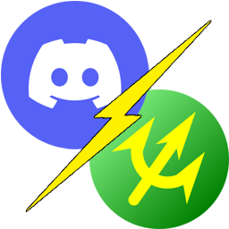

EqMax-Discord-Bridge
～EqMaxの緊急地震速報をDiscord・Slack・Matrixへ通知するためのセットアップキット～
はじめに
このたびは、緊急地震速報通知ツール『EqMax-Discord-Bridge』をご利用いただきありがとうございます。
本マニュアルは、導入から運用までの全体的な使い方ガイドとして作成されています。
マニュアルの構成
各セッションはサイドバーから選択して移動できます。
動作環境・開発環境
- 開発＆動作確認: Windows 11 / Windows Server 2025
- 対応OS: Windows 10/11, Windows Server 2022/2025 (x64専用) ※ネイティブx64環境を推奨。
必要環境ソフト
- EqMax: 公式サイト
※テスト環境バージョン: 0.8.0.83 (2025-10-27) - Python: 公式サイト
※3.10-3.13推奨。2026年03月09日現在3.14以降のバージョンでは一部ライブラリが取得できません。
プロジェクト詳細
配布元 (GitHub): https://github.com/MustangTIS/EqMax-Discord-Bridge
制作者: MustangTIS
免責事項
本ツールの利用により生じた損害について、作者は一切の責任を負いません。また、EqMax本体、及び通知先各社（Discord/Slack/Matrix）は当方とは一切関係ありません。